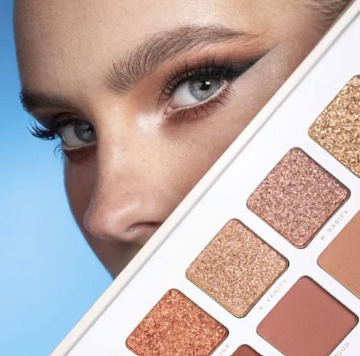
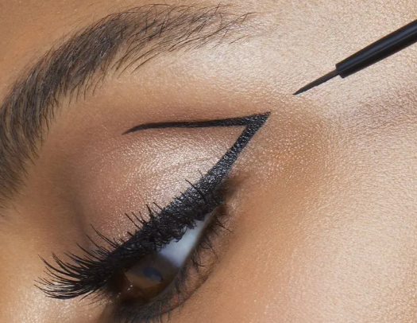
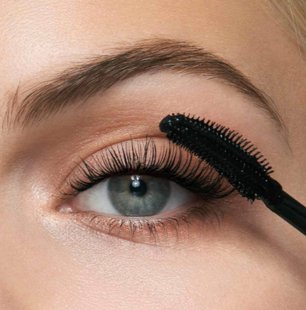

Las sombras permiten crear diferentes estilos de maquillaje. Podemos utilizar tonos naturales, brillantes o colores más intensos.
Todo para resaltar tu mirada

Las sombras permiten crear diferentes estilos de maquillaje. Podemos utilizar tonos naturales, brillantes o colores más intensos.

El delineador ayuda a definir los ojos y crear diferentes efectos. Puede utilizarse para un maquillaje sencillo o más elegante.

La máscara de pestañas aporta volumen y longitud. Es un producto ideal para destacar la mirada.